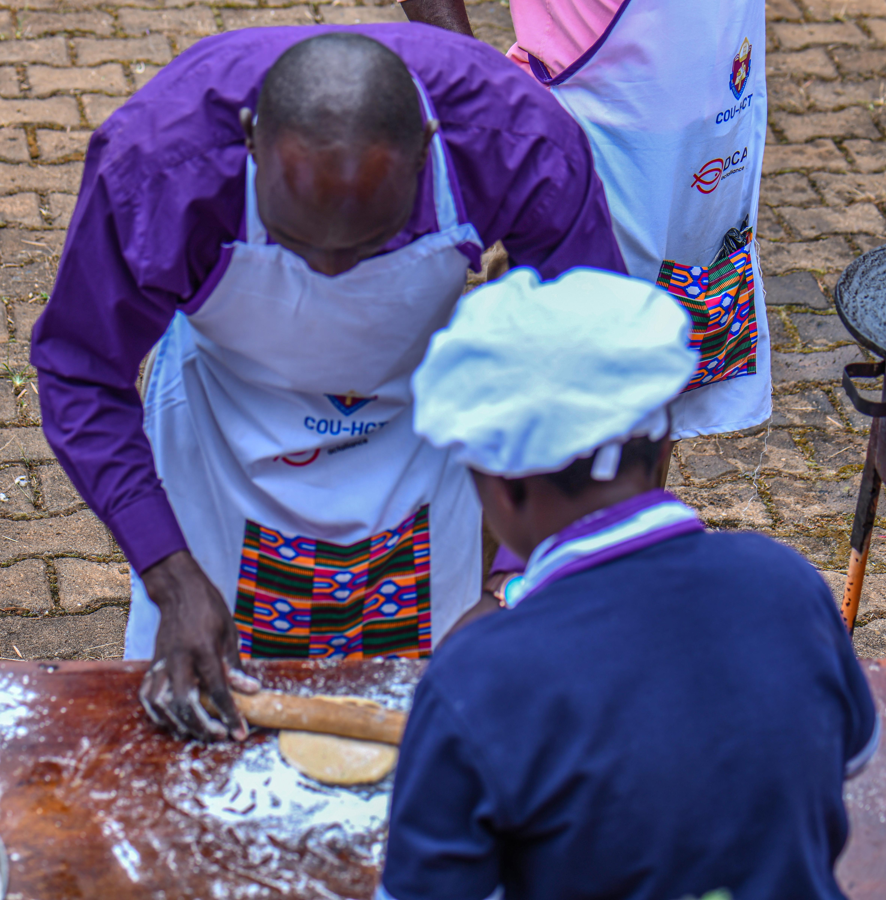

Develops gluten by aligning and cross-linking protein strands. The push-fold-turn motion stretches the dough against the work surface. Properly kneaded dough passes the windowpane test: stretch a small piece thin enough to see light through without tearing. 8–12 minutes by hand, 5–8 in a stand mixer.
Alternative to kneading for high-hydration doughs. Every 30 minutes during bulk fermentation, grab one side of dough, stretch upward, fold over to the opposite side. Rotate 90° and repeat 4 times. Builds gluten network without deflating gas. 4–6 sets replaces traditional kneading for ciabatta and sourdough.
Rest flour and water (no salt, no yeast) for 20–60 minutes before mixing. During rest, water fully hydrates flour and enzymes begin breaking down starch. This pre-hydration reduces required kneading time, improves extensibility, and creates a more open crumb. A French technique popularized by Raymond Calvel.
Final rise after shaping. Properly proofed dough bounces back slowly when poked — springs back quickly means underproofed; doesn't spring back means overproofed. Cold proofing (12–18h in fridge) slows fermentation for more flavor development and makes scoring easier. A linen-lined banneton basket helps hold shape.
Cuts made in the dough surface just before baking control where the loaf expands (oven spring). Use a sharp lame (curved razor blade) or serrated knife. Angle the blade 30–45° for an "ear." Patterns range from simple single slash to elaborate wheat stalks and leaves. Cuts must be decisive — hesitation drags dough.
Pre-baking a tart or pie shell before adding filling. Line with parchment, fill with pie weights or dried beans to prevent puffing. Par-bake: 15 minutes with weights, 5–7 without for a partially baked shell (custard fillings). Full blind bake: 20–25 min total for crisp shell (no-bake fillings like lemon curd).
Cocoa butter crystallizes in 6 forms; Form V (beta crystals) gives glossy, snapping chocolate. Tempering: melt to 115°F (dark) to destroy all crystals, cool to 82°F on marble to seed Form V, rewarm to 88–90°F working temperature. Tabling, tabling with seed, and sous vide methods all achieve this.
Beat butter and sugar together 3–5 minutes until pale and fluffy before adding eggs or flour. The mechanical action forces air into the fat matrix, creating tiny bubbles that expand in the oven. Room-temperature butter (65–68°F) is essential — cold butter won't aerate, warm butter collapses. Foundation of most butter cakes.